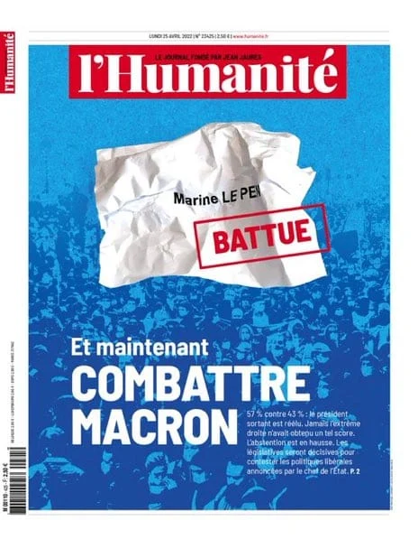

Revue de presse
« Marine Le Pen battue » La une de L’Humanité du 25 avril 2022
Date indiquée par Facebook · 25 avril 2022
Repères éditoriaux
Au lendemain du second tour de la présidentielle, nous avons relayé la une de L’Humanité. Le journal titre sur la défaite de Marine Le Pen et affiche « Et maintenant combattre Macron ».

Sources
Archive rouge · document diffusé sur Facebook · AR-0002-FB-01896
À lire aussi · Face au budget d’austérité, le PCF propose un pacte d’avenir